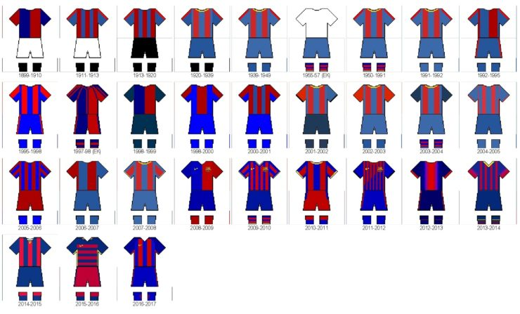
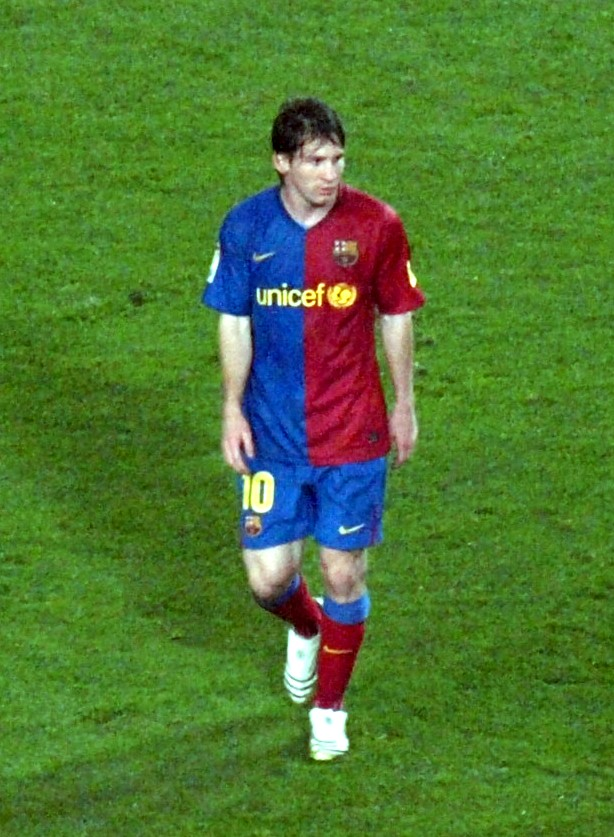
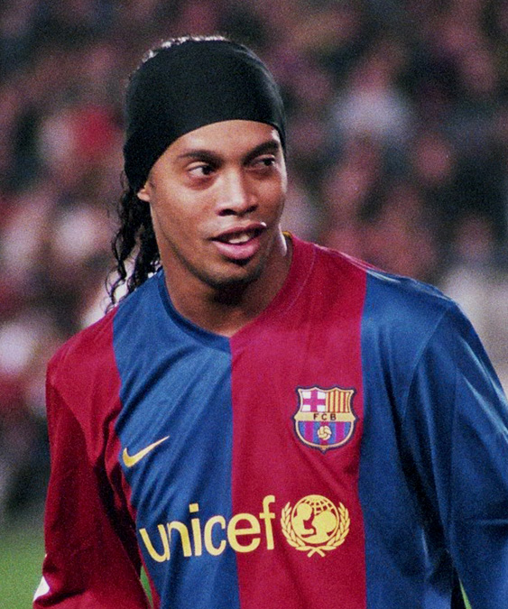
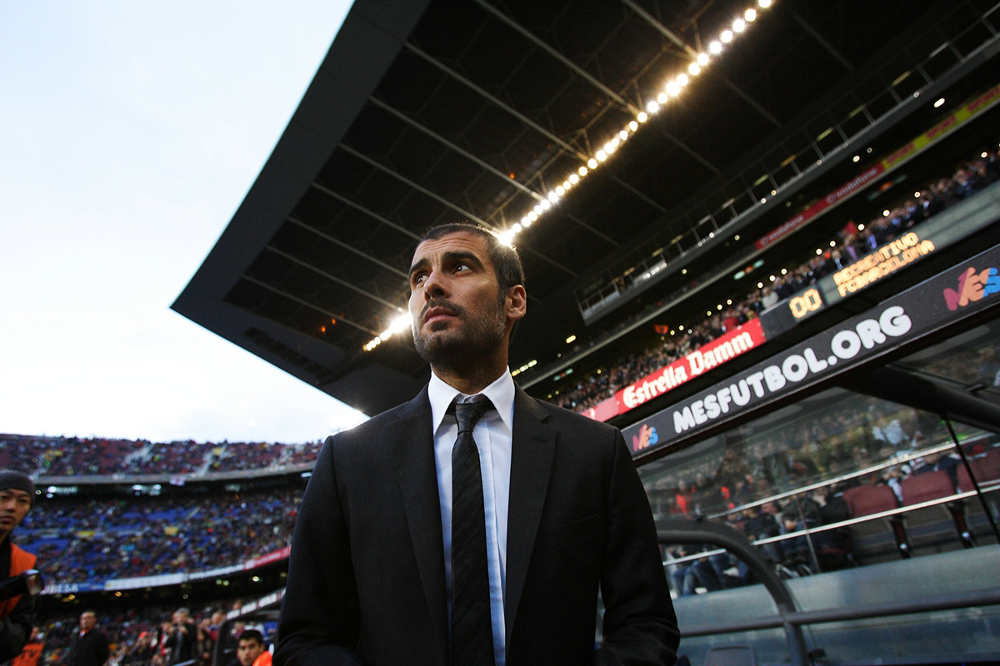

History of FC Barcelona
The history of Futbol Club Barcelona begins from the football club's founding in 1899 up until the present day.
FC Barcelona, also known simply as Barcelona and familiarly as Barça, is based in Barcelona, Catalonia, Spain.
The club was founded in 1899 by a group of Swiss, Catalan, German, and English footballers led by Joan Gamper.
The club played amateur football until 1910 in various regional competitions.
In 1910, the club participated in their first of many European competitions, and has since amassed fourteen UEFA trophies and a sextuple.
In 1928, Barcelona co-founded La Liga, the top-tier in Spanish football, along with a string of other clubs.
As of 2024, Barcelona has never been relegated from La Liga, a record they share with Athletic Bilbao and arch-rival Real Madrid.
This partnership has now surpassed a decade and plenty of success, for both the brand and the club, has been enjoyed since its start date.
Over the years, we have seen the club’s iconic colours displayed in various ways, but for the first three seasons of this deal all parties seemed fairly adamant on having a central club crest.
Barca’s home shirt in 1999/00, which incorporated this feature, had a special look to it with commemorative stitching celebrating their 100th anniversary.

Legendary players and trainers.



Despite being the favourites and starting strongly, Barcelona finished the 2006–07 season without any trophies won.
A pre-season United States tour was later blamed for a string of injuries to key players, including leading scorer Samuel Eto'o and rising star Lionel Messi.
There was open feuding as Eto'o publicly criticized coach Rijkaard and Ronaldinho.
Ronaldinho also admitted that a lack of fitness affected his form.
In La Liga, Barcelona were in first place for much of the season, but inconsistency in the New Year saw Real Madrid overtake them to become champions.